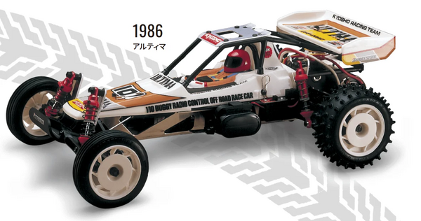

京商 アルティマ

引用元画像：京商公式サイト
📋 基本情報
| メーカー | 京商（Kyosho） |
|---|---|
| 機種名 | アルティマ（Ultima） |
| シャーシ略称 | アルティマ |
| 型番 | 30625 |
| 発売時期 | 初代：1986年発売 復刻版：2019年10月発売 |
| 価格 | ¥41,800（税込） |
| 生産状況 | 現行販売中 |
| カテゴリー | ラジコンカー（1/10スケール 電動RCカー） |
| サブカテゴリー | レーシングバギー（2WD オフロード） |
| シリーズ | ビンテージシリーズ 第8弾 |
📏 シャーシスペック
| 全長 | 370mm |
|---|---|
| 全幅 | 244mm |
| 全高 | 106mm |
| ホイールベース | 260-263mm（調整可能） |
| トレッド | フロント206mm / リヤ208mm |
| タイヤ幅/径 | フロントΦ75×20mm / リヤΦ82×36mm |
| フレーム | A6061T6航空機グレードアルミ合金製モノコックフレーム（軽量・高剛性） |
| 全備重量 | 約1,500g（7.4V/4000mAh LiPo搭載時） |
⚙️ 駆動系
| 駆動方式 | リアドライブ2WD |
|---|---|
| デフギヤ | ギヤデフ（オプションでボールデフOTW101へ換装可能） |
| ギヤ比 | 8.64:1 |
| ギヤピッチ | 48ピッチ（初代は8ピッチから変更、駆動ロス低減） |
| トランスミッション | 焼結メタルギヤ（OPTIMA譲り） 新設計46ナイロン57T 1stギヤ |
| スリッパークラッチ | 標準装備（ジャンプ着地時の衝撃保護） ※オプション：HDスリッパーパッド（SCW021 HD） |
| モーター | 540クラス（別売） |
🔧 サスペンション
| 形式 | 4輪ダブルウィッシュボーン独立懸架 |
|---|---|
| サスアーム | 高強度樹脂製 |
| ダンパー | オイルダンパー×4本 |
| ステアリング | 標準ステアリング機構 |
| トー角調整 | リアハブキャリアで1.0°、2.0°、2.5°に調整可能（樹脂ブッシュ交換式） |
💡 特徴
ビンテージシリーズ第8弾 - 世界選手権を制した名機
- 1986年発売の初代アルティマは、OPTIMA譲りのレーシング技術を投入した2WD電動バギー
- 1987年イギリスで開催された第2回世界選手権2WDクラスにてTQ＆1-2-3フィニッシュを達成
- 世界を席巻したレジェンドマシンが、ビンテージシリーズとして復活
現代技術でアップグレード
- 航空機グレードA6061T6アルミ合金製モノコックフレーム（軽量・高剛性）
- グラスファイバー強化樹脂製アッパーデッキとの組み合わせで最適なバランス
- 48ピッチギヤへの変更で駆動ロスを低減（初代は8ピッチ）
- 焼結メタルギヤ採用（OPTIMA譲りの高耐久性）
- マルチピンブロックパターンのリアタイヤで現代のオフロードトラックに最適化
フルボールベアリング仕様
- 全14個のボールベアリングで駆動ロスを最小化
- バッテリーガード標準装備（クラッシュ時のショート防止）
- バッテリーステーは全バッテリータイプに対応（フック＆ループファスナー式）
- モーターガード標準装備（初代ではオプション品、A6061T6材で高耐久性）
ドライバーコクピット付きポリカボディ
- 初代ULTIMAのスタイルと雰囲気を忠実に再現
- ドライバーフィギュア付きのスケール感
- 樹脂製ウイングマウントで2段階の高さ調整可能
- シムでウイング角度を3～6度に調整可能
- 樹脂製ウイングは耐クラッシュ性を向上（初代はポリカーボネート製）
🏆 歴史的背景
1987年世界選手権での快挙
- 第2回電動オフロード世界選手権（イギリス）2WDクラスにて圧倒的勝利
- TQ（Top Qualifier：予選トップタイム）＆1-2-3フィニッシュという衝撃的な結果
- RC業界全体に大きな影響を与えた歴史的瞬間
- OPTIMAで培ったレーシング技術を2WDバギーに投入した成果
初代から復刻版への進化
- 基本デザインは1986年版を忠実に継承
- 現代のパワーソースに対応した構成部品のアップグレード
- 現代のRCレーシングサーキットに適応する性能向上
- 2019年版では組み立てやすさと現代技術の融合を実現
🔧 ぽすとそに工房での修理実績
修理難易度
復刻版：★★☆☆☆（簡単）
初代：★★★★★（非常に難しい）
復刻版はパーツも豊富で、走らせている個体数も多く修理しやすい。しかし、初代アルティマはパーツがほぼ見当たらず、修理難易度は非常に高い。
よくある故障・注意点
- 初代：パーツ入手困難、レストアには相当な知識と技術が必要
- 復刻版：現代パワーソースに対応しているためトラブルは少ない
- モノコックフレームは強度が高いが、過度な衝撃には注意
- スリッパークラッチの調整が走行性能を左右する
修理のポイント
- 復刻版：定期的なギヤボックスのグリスアップ推奨
- ボールベアリング14個の状態チェック
- スリッパークラッチの調整（HDパッドへのアップグレード推奨）
- リアハブキャリアのトー角調整でセッティング変更可能
- オプションのボールデフ（OTW101）でドライビングフィール向上
その他の特徴
- ビンテージシリーズならではの組み立てやすさ
- 現代のサーキットやパワーソースに完全対応
- OPTIMAと共通パーツが多く、カスタマイズの幅が広い
- 世界選手権を制した栄光の歴史を体感できる
- 復刻版としての完成度が非常に高い